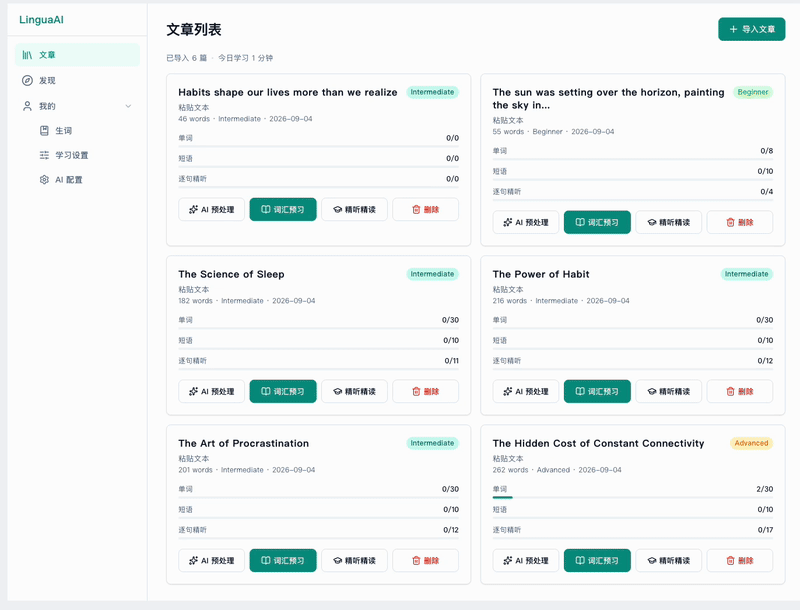

全景：一个人 + 一条 Skill 流水线，8 天交付一个应用
先看结果
2026 年 8 月 1 日到 9 月 7 日，一个人 + TRAE Work + GLM-5.3，完成了下面这个真实可运行的应用 LinguaAI。

主力模型 GLM-5.3（跑在 TRAE Work 里）· 原型设计用 TRAE Work · 本工程总花费约 5000 积分。 参考：TRAE Work Pro 会员 99 元/月，含 4000 + 200×30（每日签到）= 约 10000 积分/月——这个应用的成本不到一个月会员额度的一半。
这套课教什么
不是「怎么用 React 做英语学习应用」——网上有成百上千篇。
它教你的是 「如何用一条 Skill 流水线驾驭 AI Agent 交付软件」：你怎么说、它怎么听、你给它哪个 Skill、你如何把关它的产出。LinguaAI 只是案例，换成任何应用，方法都能迁移。
你不是在「用 AI 写代码」，而是在「管理一个会写代码、但需要明确指令和严格验收的初级工程师」——而 Skill 就是你发给它的标准作业程序（SOP）。
三个核心概念
① AI Agent 不是聊天机器人
聊天机器人：一问一答，答完就忘。Agent 有目标、能调用工具、能多步执行——你给它「实现工单 #4」，它会自己读代码、写实现、跑测试、修 bug、汇报。在本课程里，Agent 就是 TRAE Work + GLM-5.3。
② Skill 是给 Agent 装的「专业技能插件」
每个 Skill 是一个 SKILL.md 文件，本工程用到的装在 .agents/skills/（属 Matt Pocock 工程套件）。本工程用的核心流水线：
setup → grill-me → to-spec → to-tickets → implement
(配置) (讨论需求) (整理PRD) (拆分工单) (实现)
↑
过程中按需调用 tdd / code-review这些核心 Skill 都带 disable-model-invocation: true——模型不会自动调用，必须由你显式触发（如 /grill-me）。这揭示了范式的本质：方向盘始终在你手里，Skill 是你主动下达的命令，Agent 负责高效执行。
③ 工单是人和 Agent 之间的「合同」
口头的「帮我做个东西」是 Agent 灾难的来源——它会自由发挥，你反复返工。避免返工的秘诀：一切从一张写清楚验收标准的 Issue 开始。每张工单都是一份合同：做什么、算通过、边界在哪。Agent 照合同施工，你照合同验收。
为什么有效：三个反直觉事实
- 先画原型比先写代码便宜一个数量级——改静态 HTML 要 1 分钟，改 React 页面要 1 小时。工程第一条提交就是原型。
- 给 Agent 一个「假实现」先跑通全链路——mock 适配器让 AI 功能在不花钱的情况下先跑通、先写测试，接真实模型时只换开关。
- Agent 会「忘记」和「自作主张」，所以要有项目记忆——踩过的坑（CORS、TTS 资源 ID 格式、工厂引用不稳定……）都记进项目记忆，后续会话自动加载。
工程最初用 Next.js，三天后整个方向推翻重来。原因不在技术，而在协作方式错了：没先走流水线对齐需求，Agent 在过重的技术方案里反复折腾。教训不是「别用 Next.js」，而是「先对齐要什么、再决定怎么造」。
课程地图（8 课）
- 全景Agent / Skill / 工单 / 成本（本课）
- 原型设计solo-design 先把「长什么样」定下来
- 需求产出setup → grill-me → to-spec → to-tickets，一个想法变一组工单
- 实现循环implement + tdd + code-review，拿工单到提交
- 踩坑与调试diagnosing-bugs + 真实 bug 复盘
- 技术实现LinguaAI 架构浓缩（只讲思路）
- 元课程teach skill 怎么生成这套教程
- 展望与挖坑本工程可改进之处，为后续课程留白
- 运行
git log --oneline --reverse | head -10，找到第一条原型提交。问：为什么「原型」会成为第一条提交？ - 打开 GitHub Issue #1（PRD），看它怎么把一个应用拆成 10 张可独立验收的工单。
- 翻一眼
.agents/skills/，找到grill-me、to-spec、to-tickets、implement的 SKILL.md，感受「Skill = 一份 SOP」。